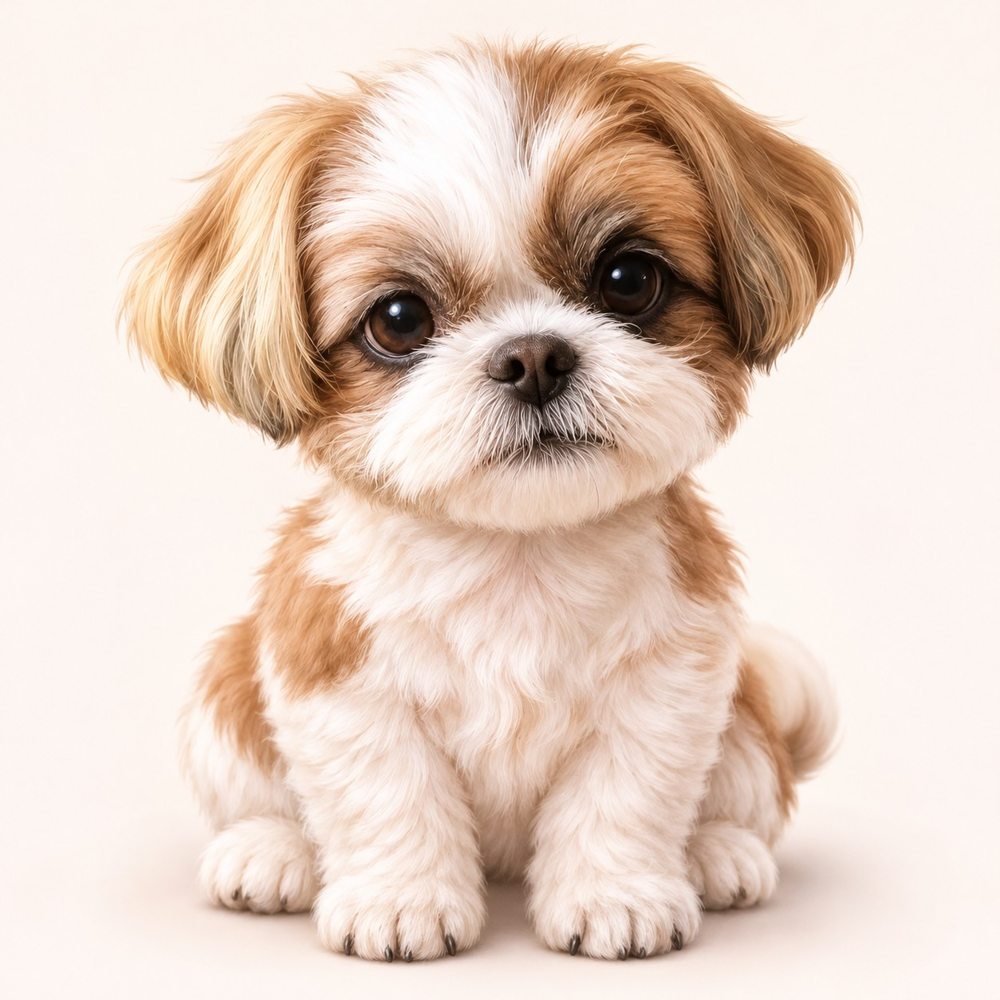

うちの子と、わたしたち。♡
今はぽんっ。詳しくはあとからで大丈夫。
🐾 うちの子を登録 ♡
名前と写真を入れると、うちの子が主役に！
犬と猫で、お世話の記録を切り替えられるよ。以前の犬の記録も残ります。
写真なしの場合はメルちゃんのイラストを表示します。
写真・名前はこの端末内に保存します。犬・猫の記録は別々に表示されます。家族間では自動共有されません。ブラウザのデータ削除で消える場合があるので、元写真はスマホにも残してね。
きょうのお世話
押した瞬間の時刻を保存。間違えたら「記録」から削除できるよ。
きょうの記録 0回
お世話の記録
「詳しく」で、記録ごとに違う項目を後から入力できるよ。
飼い主さんの気持ち 💗
今日の自分はどんな感じ？ 表情を押すだけでもいいよ。
🔒 この試作版の「本音」は本当の秘密機能ではありません。同じスマホを使う人には見える可能性があります。家族共有・ログインも未対応です。
気持ちの記録
📸 ふたりの思い出 ♡
うちの子の写真と、その日の飼い主の気持ちを一緒に。疲れた日は表情をぽんっと選ぶだけでもOK。
写真を選んだ場合は小さくしてこの端末内に保存するよ。
🔒 今は試作版。思い出も写真もこのスマホのブラウザ内に保存。家族には自動共有されず、同じ端末を使う人には見える場合があります。ブラウザのデータ削除で消えることがあるので、元写真はスマホにも残してね。写真が多いと保存容量に達する場合があります。
🐾 月ごとの思い出
0件うちの子と、わたしたち。♡
うちの子の毎日も、飼い主の本音も、大切に。
ごはん、トイレ、ねんね。犬や猫との毎日は可愛くて、大変で、ときどき寝不足。
だから、忙しいときはぽんっと押すだけ。つけ忘れても、責めない。育てる人の気持ちも大切にしたい。
現在は試作版です。記録はこの端末のブラウザ内に保存します。機種変更やデータ削除で失われる場合があるので、バックアップを利用してください。犬猫それぞれ1匹ずつの試作版です。家族間の自動共有や非公開ノートの保護は未実装です。体調の異変は記録だけで判断せず獣医師に相談してください。